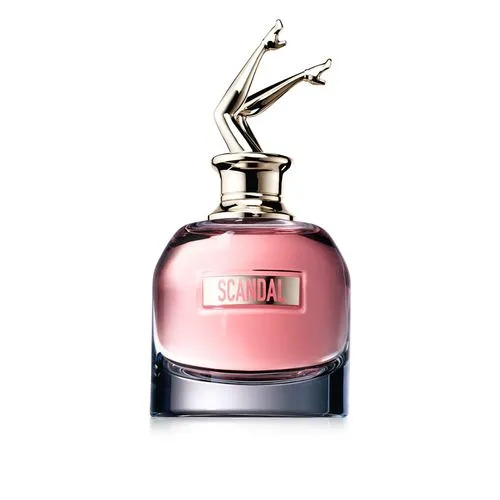

Scandall
Jean Paul Gaultier
$81.500
"Scandall" es una fragancia que desata la provocación y el misterio en cada rociada. Este elixir olfativo es como un secreto bien guardado que se revela lentamente, dejando a su paso una estela de intriga y deseo.
Notas Olfativas:
- Notas de Salida:
- "Scandall" comienza con una explosión de energía y sensualidad gracias a las notas de salida de pimienta rosa y bergamota.
- Notas de Corazón:
- En el corazón de la fragancia, el pachulí revela su profundidad y misterio. Esta nota terrosa y seductora se mezcla con la suavidad del jazmín, creando un contraste fascinante entre la oscuridad y la luz, la audacia y la delicadeza.
- Notas de Fondo:
- La base de "Scandall" está dominada por la vainilla, que aporta una dulzura envolvente y una calidez sensual. Estas notas finales crean una estela duradera y adictiva que te acompaña a lo largo de la noche.